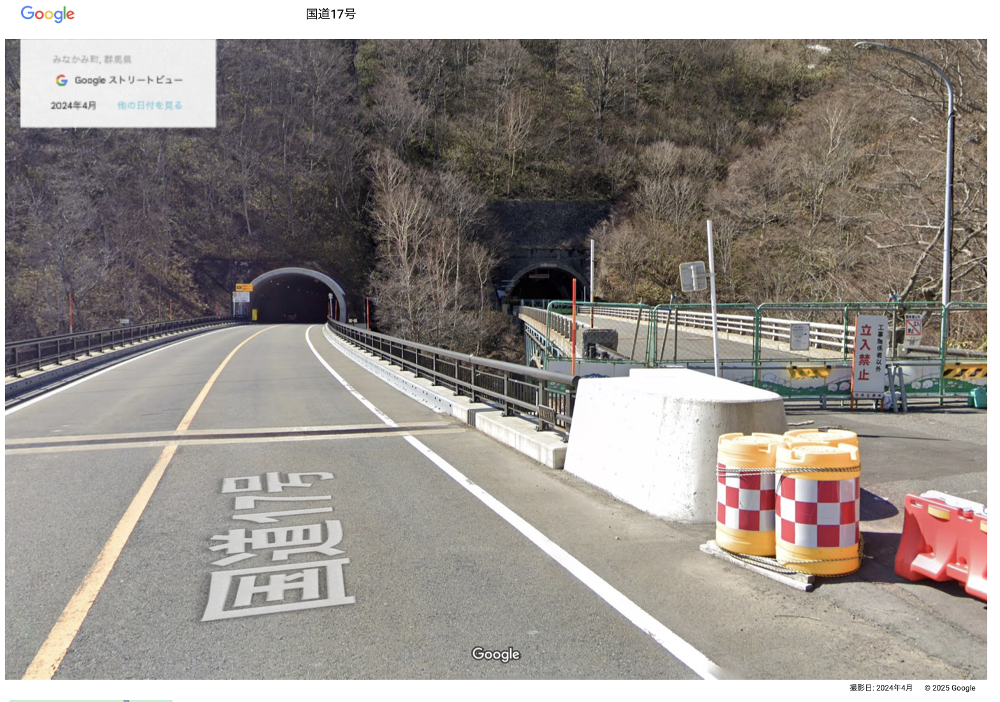

The Lingering Challenges of Aging Tunnel Infrastructure in Japan
Is This Really the Right Way Out?
The 2012 ceiling collapse in the Sasago Tunnel, which killed nine people, brought nationwide attention to the risks posed by Japan’s aging tunnels. In response, the government began requiring inspections every five years, grading tunnel conditions in four categories:
- I (good)
- II (preventive maintenance recommended)
- III (early intervention needed)
- IV (urgent repairs needed)
The survey found that nearly all of Japan’s tunnels have issues, from minor cracks and leaks to serious structural flaws—a troubling reality for a country with vast mountainous terrain and one of the world’s largest tunnel networks.
As of March 2024, just 2.6 percent of tunnels were deemed to be in good condition. The vast majority—67.2 percent—require preventive maintenance, while more than 30 percent need prompt or urgent repairs.These figures are based on aggregated reports, published as PDFs, that compile information from each operating organization and prefecture.
As the number of aging tunnels increases each year, those currently classified as Category II(preventive maintenance recommended)—the largest group—are expected to shift into higher-risk categories over time. These figures represent not just the present, but the risks Japan faces in the years ahead.
In response, the government and local authorities have begun repairs on tunnels under their jurisdiction, with progress reports released every few years.
By prefecture,
Source: Aggregated independently from the Ministry of Land, Infrastructure, Transport and Tourism’s Road Maintenance Annual Report PDF data. Bubble chart locations correspond to the latitude and longitude of each prefectural capital. Data retrieved via the MLIT API.
Oita tops the list with about 600 tunnels, followed by Hokkaido with just over 500, Chiba with around 470, and Hiroshima with nearly 390. Rather than reflecting industrial activity or population, these numbers mirror the mountainous geography of each region. On average, each prefecture manages roughly 400 tunnels, regardless of risk level.
Next, the focus shifts to tunnels classified as Category III (early intervention needed). Areas where more than half of these tunnels have yet to undergo repairs are highlighted in red.
The data reveal that, overall, progress on renovations has been slow. Tokyo tops the list, with 90 percent of its Category III tunnels still awaiting repairs, followed by Shiga at 80 percent, and also Ishikawa and Kyoto. In contrast, prefectures with a large number of tunnels, such as Oita, Hiroshima, and Hokkaido, do not have particularly high rates of unfinished repairs.
This suggests that the slow pace of renovations may not simply be due to the sheer number of tunnels relative to available funding. Is it possible that these areas have fewer Category III tunnels to begin with? To answer this, it is necessary to look at both the number of Category III tunnels and the rate of unfinished repairs.
Notably, Oita has managed to make steady progress on repairs despite having a large number of tunnels, and work is also advancing in Hiroshima and Hokkaido. By contrast, some prefectures with seemingly ample resources, such as Tokyo and Kyoto, are lagging behind—a pattern that appears counterintuitive.
So, after checking the situation of several tunnels using Google Street View, I discovered a different fact.
Some dangerous tunnels have been closed and replaced with new roads, while others in depopulated areas are simply shut down. These abandoned closures may be a temporary fix, but letting them deteriorate is not a lasting solution.
With Japan’s declining population and shifting attitudes toward the environment, the time has come to reconsider not only how unnecessary infrastructure is decommissioned, but also whether new roads should be built at all. A more careful and phased approach to retiring and removing aging infrastructure is needed, rather than simply letting it fall into neglect.